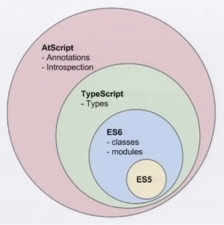

当前，前端领域最热的几个话题中一定有Angular2.0和React这两个。前端时间参加2015开发者大会，前端论坛也基本上是在讨论这两个主题，并极力推广react的使用。
鉴于明年部门一个产出是“组件化”，而这两个框架（react属于库）都适合于组件化的开发。本文就简单说说针对移动平台部，从基本特征和主要点的设计思路、学习成本、代码分析和相关生态上讲解Angular2.0和React的实用性和各种利弊。
Angular2.0
一、基本特征和设计思路
值得一提的是，Angular2.0是一个MVVM框架，而React是一款专注于构建可复用组件的库。这是二者最显而易见的区别。
首先，Angular2.0与AngularJS 1.x有极大的不同，可以说从设计思路和架构上就进行了大手术。从名称上也可以看书，Angular2.0不能叫AngularJS2.0（这是Angular还有一个Dart版本）。在AngularJS 1.x中存在的诸如Controller、Service、Factory、指令包括那么重要的Scope都不见了。这么激进的革新，出发点在哪里呢？除了解决自身的一些问题，更重要的意义在于对未来标准的迎合，这些标准主要包括：
- module
- Web Components
- class
- observe
- promise
module的问题很好理解，JavaScript第一次有了语言上的模块机制，而Web Components则是约定了基于泛HTML体系构建组件库的方式，class增强了编程体验，observe提供了数据和展现分离的一种优秀方式，promise则是目前前端最流行的异步编程方式。
即使你很熟悉Angular 1.x，一下去读Angular2.0的Hello World代码，相信我，你看不懂。那这是为什么呢？我们一点点来说。
1.1 语法：AtScript和ES6
Angular2.0 开发小组自己开发出一套新的语言AtScript。
AtScript属于JavaScript的扩展语言，它与JavaScript的关系如下图：

有关AtScript的讲解，可以看下知乎的这个帖子说的比较清晰：贴1
从上图也可以看出，Angular2.0也是基于ES6的。自从今年ES6推出，新出来的框架也必定开始面向未来，所以包括React也推荐大家用ES6语法去书写代码。有关ES6的语法可以看下阮一峰老师的ES6入门，当然，能够阅读英文版规范的更好。
值得一提的是，目前编写任何ES6代码都要在上线前使用编译工具（如gulp或grunt）把代码编译成ES5代码，原因是很多浏览器目前还不支持ES6语法。
1.2 基于ES6语法
ECMAScript 6（以下简称ES6）是JavaScript语言的下一代标准，已经在2015年6月正式发布了。它的目标，是使得JavaScript语言可以用来编写复杂的大型应用程序，成为企业级开发语言。
现今，越来越多的框架和库都在使用ES6语法来进行代码书写。Angular2.0和React都鼓励用ES6。ES6加入了以下新特性：
- let和const命令
- 变量的解构赋值
- 字符串、正则、数值、数组、函数和对象进行了扩展
- 加入了Set和Mao数据解构
- Iterator和for…of循环
- Generator函数
- Promise对象
- 异步操作和Async函数
- 引入了class
- 引入了module
这些基本都可以理解为ES5的语法糖。为什么做了这么多新的东西？原因就是近些年来随着库和框架越来越多，加上人们越来越多的使用javascript开发大型应用，就产生出了很多好用的工具、库、框架和思想。比如适用于后端的mvc和模块的概念思路都在前端开发中被使用。JS是异步的，这大家都知道，所以一些基本的异步操作和流程控制函数的出现就变得很自然了。js饱受诟病的一点就是没有类，所以es终于引入了类的概念，让代码编写起来更美观，阅读性更高了。
如果想系统的了解这些新特性，可以阅读阮一峰老师的《ECMAScript6入门》。当然，我们要支持正版，最好是买一本。
1.3 基于注解
有关注解的基本使用在上面的帖子里说的比较清晰了。这里引用一下：
注解的意义主要在于为类型添加特定的约束，好比一个类型是一张纸牌，有注解的类型相当于在纸牌背面贴了额外的标签。如果是正常使用这个类，可以就当注解不存在，只看正面就行了，如果想要拿这个类来作特殊用途，就可以把牌反过来看看，看哪些标签上给了什么额外的信息。比如说，在组件化体系中，某个类被当做组件类的时候，可能需要额外的配置信息，如果没有注解的话，也可以在类上面放静态变量来实现，但不优雅。语言支持注解的话，写到注解上，就比较优雅了，类的实现中只写具体功能的实现。
1 | @Component({selector: 'foo'}) |
看这个例子里面那个@Component的一段，如果以MyComponent类的本身功能来说，有没有这句都不会影响这个类主体功能的实现，但我们可能在特定框架（Angular）中，需要把它与界面上某种DOM元素的选择器关联起来，就可以添加这么一句注解，然后，仅仅在Angular的框架中去读取并使用它即可，其他框架则无视之。此外，注解对代码文档生成的作用应当比注释更大，因为注解格式可以有编译期检查，而注释没有，根据注解，甚至还能在运行时生成文档。
1.3 组件化
因为历史原因，Angular 1.x架构设计思路是很乱的，组件基本就是通过指令的定义来做的。自从Web Components规范出来，所有的框架都向之靠拢，Angular2.0开发小组也借鉴了react的一些思想，正式引入了组件的概念。组件基本上是用ES6的Class来定义的。代码如下：
1 | //从angualr2框架中引入基本的组件、核心指令、表单指令和启动命令 |
以上是我找的一段例子代码，这段代码定义了一个sample-app元素组件。这段代码十分有代表性在html里这样使用：
1 | <section class="container sample-form-content"> |
这段代码很好的讲解了Angular2.0中如何定义组件类、使用注解给组件类作标签以及其他基本用法。当然这是最基本的用法，还有很多深层次的东西都是没有用到，比如路由等等。
这里只说这些基本用法我想就足够了，在深层次的使用，我们再摸索中前进。更多详细的内容，大家还是移步汇智网的这个课程，我认为挺不错的。
二、学习成本
要想把Angular2.0用起来，需要了解学习的东西还是比较多的。以下的东要会：
- ES6语法
- AtScript语法
- 编译工具gulp或grunt
三、对移动平台的支持
AngularJS1.x并没有针对移动平台做特别的优化，但随着近些年来移动设备的普及，让Angular2.0开发团队开始思考让Angular更适合于移动设备，所以在做设计的时候，他们提出“Angular2.0是面向移动设备的。”但很多现在都处于设计阶段，一切尚未盖棺定论。
四、生态圈
因为现在Angular2.0推出的只是alpha版本，很多优秀的提议和理念也都在计划之中。所以Angular2.0的生态还很薄弱，就国内而言，目前国内大部分的生态还是Angular1.x的。不过倒是出了几个课程，书籍我至今还没看到过。由于Angular2.0的断层式升级，大家更多的是在议论它到底好不好，我们是不是还要做升级等等诸如此类的话题，真正的干活还是比较少的。
而作为对比，React在这方面就会好的多。以下就来说说React相关的东西。